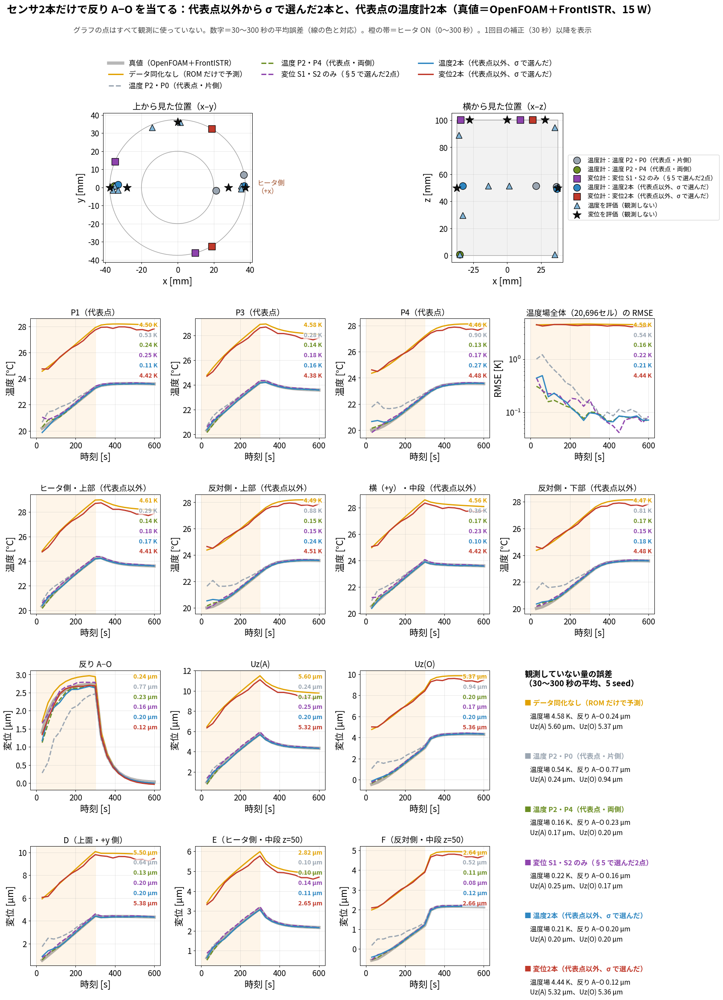

更新日：2026-10-12
真値はすべて計算（OpenFOAM＋FrontISTR）です。実機では確かめていません。
| 内容 | |
|---|---|
| 問い | センサが2本だけなら、どこに置けば反り A−O が一番よく当たるか |
| 候補 | 代表点（P0〜P4）以外の、温度計 20,691 か所と、変位計 14,754 通り（全節点 × 3方向。A・O のすぐ近くは除く） |
| 選び方 | 測る前に、σ（後で説明）が一番小さくなる候補を1本ずつ選ぶ。温度計2本・変位計2本・種類を問わず2本の3通り |
| 確かめ方 | 選んだ2本だけを使ってデータ同化し、測っていない場所の温度と変位が真値に合うかを見る |
| 真値 | OpenFOAM（温度）＋FrontISTR（変位）。15 W・25 W・15 W 間欠加熱の3条件 |
言葉の意味（この記事ではこの意味で使います）
| 言葉 | 意味 |
|---|---|
| 代表点 P0〜P4 | ROM（軽い計算モデル）が温度を計算する5つの点 |
| センサ | 「ここに温度計（または変位計）を置いたとしたら」という場所。実物は使っていない |
| センサの値 | そのセンサが示す数字。計算の中では「真値＋ノイズ（0.3 K または 0.3 µm）」を測った値とする |
| 反り A−O | 上面のヒータ側 A と反対側 O の、上下の変位の差。知りたい量。A・O は測らない |
ヒータの発熱量などは正確には分からないので、条件を変えて ROM を 4,000 本計算し、「ありえる世界」を 4,000 個作ります。 それぞれの世界で、候補のセンサが示すはずの値と、反りを計算します。
良い場所 ＝ センサの値が分かれば、反りも分かる場所です。
| 世界 | センサ X の値 | センサ Y の値 | 反り |
|---|---|---|---|
| 1 | 2.0 | 5.1 | 1.0 |
| 2 | 4.0 | 1.3 | 2.0 |
| 3 | 6.0 | 4.8 | 3.0 |
（数字は説明用。）X は値が大きいほど反りも大きいので、X を測れば反りが分かります。Y は反りと関係がないので、測っても反りは分かりません。
σ は「センサの値を知った後でも、反りがまだどれくらい分からないか」です。X なら小さく、Y なら大きくなります。
| 使うもの | 中身 | どこから |
|---|---|---|
| 重み | 温度が 1 K 上がると、センサの値や反りがいくつ変わるか | FrontISTR（blog_008 §5-2） |
| 温度のばらつき方 | 4,000 個の世界で、5点の温度がどうばらつくか | ROM 4,000 本 |
| ノイズ | センサの誤差 0.3 K、0.3 µm | 仕様 |
測った値は使いません。 だから、センサを付ける前に計算できます。式の導き方は付録Aにあります。
| 選び方 | 1本目 | 2本目 | σ（反り） |
|---|---|---|---|
| 温度計2本 | ヒータ側・中段 | 反対側・中段 | 0.37 µm |
| 変位計2本 | 上面 \((18.8,\,32.5)\) mm の横方向 | 上面 \((18.8,\,-32.5)\) mm の横方向（1本目の鏡写し） | 0.30 µm |
| 種類を問わず2本 | 変位計2本と同じ | 同じ | 0.30 µm |
比べるための σ：何も測らない 1.45 µm、代表点の温度計 P2・P0（片側）1.19 µm、P2・P4（両側）0.59 µm。
ROM の計算を 60 通り同時に回し（60個の「メンバー」）、30 秒ごとにセンサの値と比べて直します。
| 手順 | やること |
|---|---|
| ① 予報 | 60個のメンバーが、それぞれ自分の発熱量・放熱で ROM を 30 秒進め、5点の温度を出す |
| ② 予想 | 各メンバーの5点の温度から、「センサはいくつを示すはずか」を計算する |
| ③ 測る | センサの値（真値＋ノイズ）を得る |
| ④ 比べて直す | 予想と測った値のずれに応じて、各メンバーの5点の温度・発熱量・放熱を直す |
| ⑤ 次へ | 直した値から、次の 30 秒を予報する（20回くり返す） |
変位計は温度を測りません。それでも温度を直せるのは、変位が5点の温度の重み付き和だからです。 変位が予想とずれていたら、「どの点の温度がずれていれば、そのずれが説明できるか」を逆にたどって、温度を直します。 変位そのものは直しません。直すのは温度で、変位は直した温度から計算し直します。
① 予想する。 メンバーの5点の温度に重みを掛けて足し、変位計が示すはずの値を出します。今回の変位計（上面の横方向）の重みは
| P0 | P1 | P2 | P3 | P4 | |
|---|---|---|---|---|---|
| 変位計の重み [µm/K] | −0.52 | +0.56 | −0.77 | +0.41 | +0.31 |
なので、ヒータ側（P0・P2）が温まると値が下がり、反対側（P1・P4）が温まると値が上がります。
② ずれを出す。 ずれ ＝ 測った値 − 予想値。
③ ずれを温度の直し量に換算する。 換算の係数（カルマンゲイン）は、60個のメンバーで「変位計の予想値」と「各点の温度」がどう一緒にばらついているかから決まります。今回の1回目（30 秒）の係数は
| 直す値 | 変位計の値が予想より 1 µm 大きかったときの直し量 |
|---|---|
| P0 の温度 | −0.13 K |
| P1 の温度 | +0.40 K |
| P2 の温度 | −0.12 K |
| P3 の温度 | −0.08 K |
| P4 の温度 | +0.46 K |
| 発熱の倍率 \(q\) | −0.01 |
つまり「変位計の値が予想より大きい → 反対側（P1・P4）が予想より熱い、ヒータ側（P0・P2）が予想より冷たい」と読み替えて、温度を直します。①の重みの向きと同じです。
④ 直した温度から、変位を計算し直す。 A・O の変位も反りも、直した温度に重みを掛けて計算し直します。だから、測っていない A・O の変位まで直ります。
実際の数字（1回目、30 秒、60個のメンバーの平均）：2本の変位計のずれは −0.19 µm と −0.07 µm でした。これに係数を掛けて足すと
（2本目の変位計の係数は 1本目とほぼ同じです。）
大事な点：この係数は、P1・P4 を上げて P0・P2 を下げる、つまり「ヒータ側と反対側の温度差」を直す向きです。5点を全部いっしょに上げ下げする向きには、ほとんど直しません。 この変位計が、全体の温まりに反応しないからです（§5）。
最初の予報は、どのメンバーも真値より約 4.6 K 熱すぎました（最初に与えた温度が高めだったため）。
| 温度計2本 | 変位計2本 | |
|---|---|---|
| 予想と測った値のずれ | −5.0 K（熱すぎを見つけた） | −0.1〜−0.2 µm（ほとんどずれを見つけられない） |
| 直した後の5点の温度 | 約 4.8 K 下がり、真値に 0.3 K まで近づいた | ほとんど変わらず、4.6 K 熱すぎるまま |
温度計は「全体が熱すぎる」ことを直接見て、5点を全部下げました。変位計2本は、全体が熱すぎても値がほとんど変わらないので、気づけませんでした。全部の数値は付録Cにあります。

15 W。上段＝センサと評価点の位置。2〜3段目＝測っていない温度、4〜5段目＝測っていない変位。太い灰色＝真値。黄＝データ同化なし、青＝σ で選んだ温度計2本、赤＝σ で選んだ変位計2本。各グラフ右上の数字＝30〜300 秒の平均誤差。
測っていない量の誤差（15 W。30〜300 秒の平均、5回の平均）
| センサ2本 | 反り A−O | 温度場全体 | \(U_z(A)\) | \(U_z(O)\) |
|---|---|---|---|---|
| データ同化なし | 0.24 µm ※ | 4.58 K | 5.60 µm | 5.37 µm |
| 温度計 P2・P0（代表点・片側） | 0.77 µm | 0.54 K | 0.24 µm | 0.94 µm |
| 温度計 P2・P4（代表点・両側） | 0.23 µm | 0.16 K | 0.17 µm | 0.20 µm |
| 変位計 S1・S2 だけ（blog_008 で選んだ2点） | 0.16 µm | 0.22 K | 0.25 µm | 0.17 µm |
| 温度計2本（代表点以外、σ で選んだ） | 0.20 µm | 0.21 K | 0.20 µm | 0.20 µm |
| 変位計2本（代表点以外、σ で選んだ） | 0.12 µm | 4.44 K | 5.32 µm | 5.36 µm |
※ データ同化なしの反りが小さく見えるのは、A と O が同じ向きに約 5.5 µm ずれて、差を取ると打ち消し合うためです。
25 W・間欠加熱でも同じ傾向でした（図：25 W、間欠加熱）。
ポイントは「全体が一様に温まること」に反応するかどうかです。
| 量・センサ | 全体が一様に 1 K 温まったときの変化 |
|---|---|
| 反り A−O | 0 µm（円筒は伸びるだけで傾かない） |
| 選ばれた変位計2本（上面の横方向） | −0.01 µm（ほとんど動かない） |
| 変位計 S2（blog_008、上面の上下方向） | 1.21 µm（伸びる） |
| \(U_z(A)\) 、 \(U_z(O)\) （上下方向） | 1.21 µm（伸びる） |
| 温度計（どこでも） | 1 K |
σ は反りだけを目的にして選んだので、「全体の温まり」を見ないセンサでも十分だと判断しました。
この落とし穴は、測る前に分かります。 同じ σ の計算で、知りたい量を反りから \(U_z(A)\) に変えると、変位計2本では 3.0 → 2.6 µm とほとんど縮みません（ほかの配置は 0.4〜0.5 µm まで縮む）。詳しくは付録Dにあります。
言えないこと・やっていないこと
記号は 4,000 個の世界の平均からのずれで書き、 \(\langle\ \rangle\) を 4,000 個の平均とします。
センサの値から反りを直線 \(\hat d=a\,y\) で予想し、外れの二乗の平均を展開します。
\[ \langle(d-a\,y)^2\rangle=\langle d^2\rangle-2a\,\langle d\,y\rangle+a^2\,\langle y^2\rangle \]
ノイズは温度と無関係なので、
\[ \langle d^2\rangle=\mathbf w^{\mathsf T}B\,\mathbf w,\qquad \langle d\,y\rangle=\mathbf w^{\mathsf T}B\,\mathbf h,\qquad \langle y^2\rangle=\mathbf h^{\mathsf T}B\,\mathbf h+r \]
\(V_d=\mathbf w^{\mathsf T}B\mathbf w\) 、 \(C=\mathbf w^{\mathsf T}B\mathbf h\) 、 \(V_y=\mathbf h^{\mathsf T}B\mathbf h+r\) として平方完成すると、
\[ V_d-2aC+a^2V_y=V_y\Big(a-\frac{C}{V_y}\Big)^2+V_d-\frac{C^2}{V_y} \]
第1項が 0 になる \(a=C/V_y\) のとき外れが一番小さく、そのとき残る外れが σ² です。
\[ \sigma^2=\mathbf w^{\mathsf T}B\,\mathbf w-\frac{(\mathbf w^{\mathsf T}B\,\mathbf h)^2}{\mathbf h^{\mathsf T}B\,\mathbf h+r} \]
30, 60, …, 300 秒の10時刻で計算して平均したものを点数にしました。
1本目を付けた後の温度のばらつき方を \(P\) とします（付ける前は \(P=B\) ）。知りたい量を \(z=\mathbf v^{\mathsf T}\mathbf T\) （ \(\mathbf v\) は何でもよい）とすると、付録Aと同じ計算で
\[ \sigma_z^2=\mathbf v^{\mathsf T}P\,\mathbf v-\frac{(\mathbf v^{\mathsf T}P\,\mathbf h)^2}{\mathbf h^{\mathsf T}P\,\mathbf h+r} =\mathbf v^{\mathsf T}\Big(P-\frac{(P\mathbf h)(P\mathbf h)^{\mathsf T}}{\mathbf h^{\mathsf T}P\,\mathbf h+r}\Big)\mathbf v \]
括弧の中は \(\mathbf v\) によらないので、センサを1本足した後のばらつき方は
\[ P'=P-\frac{(P\mathbf h)(P\mathbf h)^{\mathsf T}}{\mathbf h^{\mathsf T}P\,\mathbf h+r} \]
これを1本ごとに繰り返します（ run/select_two_nonrep.py
）。
換算表 \(H\)（温度が 1 K 上がると、センサの値がいくつ変わるか）
| センサ | P0 | P1 | P2 | P3 | P4 |
|---|---|---|---|---|---|
| 温度計1（ヒータ側・中段） | 0.068 | −0.011 | 0.945 | 0.000 | −0.002 |
| 温度計2（反対側・中段） | −0.094 | 0.660 | 0.019 | −0.120 | 0.538 |
| 変位計1・2（上面の横方向、2本とも同じ） | −0.521 | 0.564 | −0.774 | 0.405 | 0.313 |
センサの値の予想の例（メンバー1）：予報した5点の温度が平均の温度分布より \((+0.707,\,-0.394,\,+1.252,\,+0.437,\,-1.364)\) K 高いとき、温度計1の予想値は
\[ 296.94+0.068(0.707)-0.011(-0.394)+0.945(1.252)+0.000(0.437)-0.002(-1.364)=298.17\ \mathrm K \]
（296.94 K は、平均の温度分布のときに温度計1が示す値。）
60個のメンバーの平均で見た、1回目の補正
| 温度計2本 | 変位計2本 | |
|---|---|---|
| 予報した5点の温度 | (25.7, 24.6, 26.4, 24.9, 24.9) °C | 同じ |
| 真の5点の温度 | (21.1, 20.2, 21.7, 20.3, 20.0) °C | 同じ |
| センサの予想値 | (299.48, 297.81) K | (−1.767, −1.766) µm |
| 測った値 | (294.53, 292.94) K | (−1.894, −1.854) µm |
| 直した後の5点の温度 | (20.9, 19.8, 21.4, 20.0, 20.0) °C | (25.8, 24.5, 26.4, 25.0, 24.8) °C |
| 発熱の倍率 \(q\) （真値 1.0） | 1.14 → 0.80 | 1.14 → 1.14 |
カルマンゲイン \(K\)（センサの値が 1 ずれたら、各値をいくつ直すか）
| 直す値 | 温度計1 | 温度計2 | 変位計1 | 変位計2 |
|---|---|---|---|---|
| \(T_0\) | 0.973 | −0.015 | −0.127 | −0.126 |
| \(T_1\) | 0.208 | 0.776 | 0.401 | 0.393 |
| \(T_2\) | 0.968 | 0.018 | −0.120 | −0.120 |
| \(T_3\) | 0.988 | −0.008 | −0.085 | −0.081 |
| \(T_4\) | 0.112 | 0.884 | 0.462 | 0.474 |
| \(q\) | 0.052 | 0.016 | −0.010 | −0.009 |
300 秒後：温度計2本の5点の温度は (24.9, 23.2, 25.4, 24.0, 22.7) °C（真値 25.2, 23.3, 25.8, 24.2, 22.6）。変位計2本は (29.8, 27.8, 30.3, 28.7, 27.1) °C で約 4.5 K 熱すぎるまま。変位計2本の反りは 2.75 µm（真値 2.74）で当たっているが、 \(U_z(A)\) は 11.23 µm（真値 5.78）。
（計算： run/dump_two_nonrep_da.py 、結果：
results/two_nonrep_da_dump.json ）
| センサ2本 | 反り A−O | \(U_z(A)\) | 5点の平均温度 |
|---|---|---|---|
| 何も測らない | 1.45 µm | 3.01 µm | 2.38 K |
| 温度計 P2・P4 | 0.59 µm | 0.43 µm | 0.27 K |
| 変位計 S1・S2 | 0.32 µm | 0.47 µm | 0.32 K |
| 温度計2本（σ で選んだ） | 0.37 µm | 0.46 µm | 0.26 K |
| 変位計2本（σ で選んだ） | 0.30 µm | 2.55 µm | 2.12 K |
変位計2本は、反りの σ は一番小さいのに、 \(U_z(A)\) と平均温度の σ はほとんど縮みません。
鏡写しの2本が選ばれた理由：2本の重みがまったく同じなので、σ の計算では「同じ量を2回測ってノイズを半分にする」ことが得だと判断されました（0.37 → 0.30 µm）。実際には、ROM と真値のずれが2本に共通に乗るので、平均しても減りません。
| 呼び方 | 何を平均するか |
|---|---|
| 60個のメンバーの平均 | 同じ時刻・同じ点の、60個のメンバーの値（時間や場所の平均ではない） |
| 平均の温度分布 | OpenFOAM の 121 時刻（0〜600 秒、5 秒ごと、15 W）の温度場を、セルごとに時間で平均したもの |
| 4,000 個の平均 | 同じ時刻の、4,000 個の世界（ROM 計算）の値 |
| 30〜300 秒の平均誤差 | 30, 60, …, 300 秒の10時刻の誤差の平均 |
| 5回の平均 | 乱数の種を変えた5回のデータ同化の平均 |
| スクリプト | 内容 |
|---|---|
run/select_two_nonrep.py |
σ で2本を選ぶ。結果
results/two_nonrep_selection.json |
run/selected_pair_unobserved_check.py t2 |
選んだ2本でデータ同化し、測っていない量を評価。図
docs/img/unobserved_t2_*.png |
run/dump_two_nonrep_da.py |
1回目の補正の中身を書き出す |